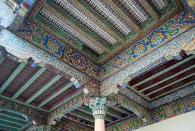
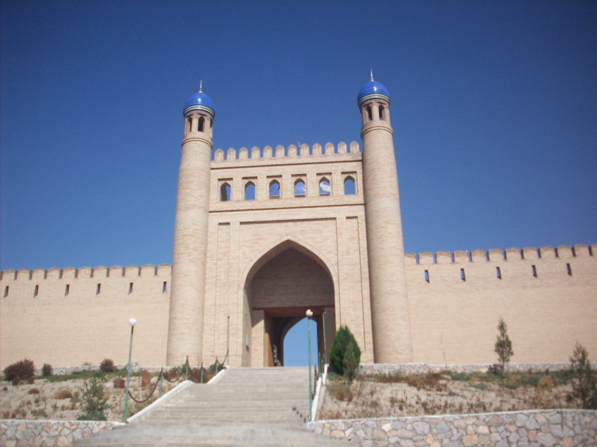
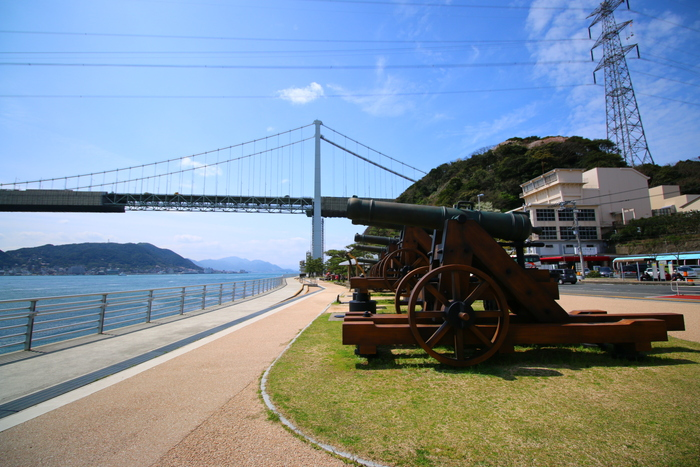
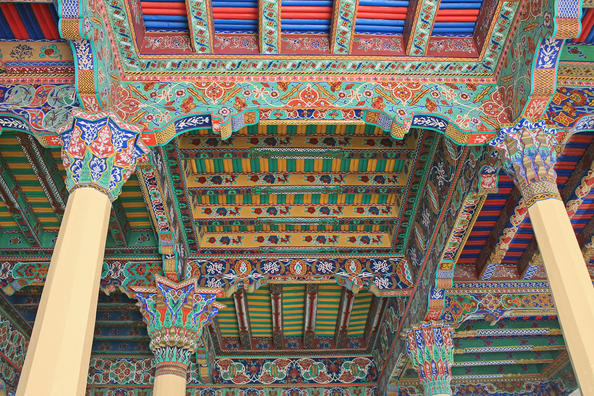

Istaravshan is a city in Sughd Province in Tajikistan. Located in the northern foothills of the Turkistan mountain range, 78 kilometers southwest of Khujand, Istaravshan is one of the oldest cities in today's Tajikistan, having existed for more than 2500 years. Before 2000, it was known as Ura-Tyube. In 2000, the Tajik authorities decided to delete Uzbek names in country's map and renamed the Uzbek name of the city from O‘ratepa into Istaravshan, the process called as forced "Tajikization" or "Persification" by many.
   